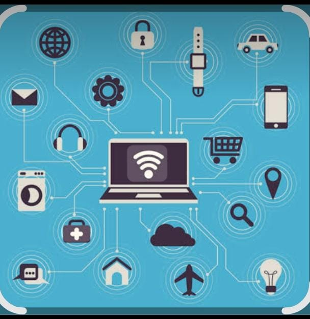

الاسم: زينب
الرقم الجامعي: 2502399
أصبحCss الانترنت جزءا اساسيا من حياتنا اليومية، حيث يستخدم في التعليم والتواصل والعمل والتسوق والترفيه. وقد ساعدت المنصات الالكترونية على تسهيل الوصول للمعلومات والخدمات في اي وقت ومن اي مكان.
هي برامج ومواقع تعمل من خلال الانترنت وتقدم خدمات مختلفة للمستخدم، مثل تطبيقات التواصل الاجتماعي وتطبيقات التعليم وتطبيقات التسوق.
توجد منصات تعليمية مثل منصة مدرستي، ومنصات تواصل مثل فيسبوك، ومنصات تسوق مثل امازون، ومنصات ترفيه مثل يوتيوب.
توفر الوقت والجهد، وتسهل التعلم عن بعد، وتوفر التواصل السريع بين الناس، وتساعد في نشر المعرفة.

ده تطبيق على الانترنت
| نوع المنصة | مثال | الاستخدام |
|---|---|---|
| تعليمية | منصة مدرستي | التعلم عن بعد |
| تواصل | فيسبوك | التواصل مع الاصدقاء |
| تسوق | امازون | شراء المنتجات |
| ترفيه | يوتيوب | مشاهدة الفيديوهات |